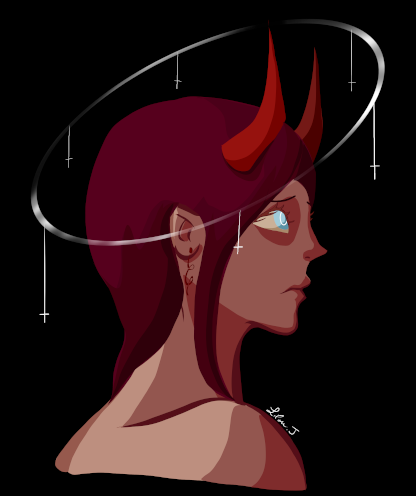
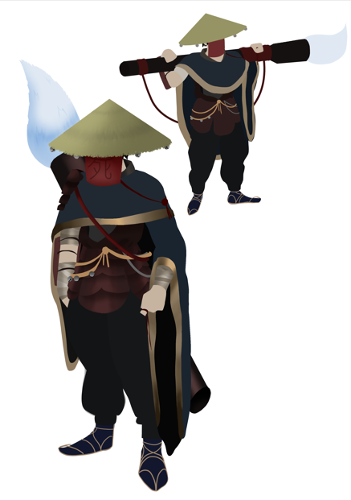
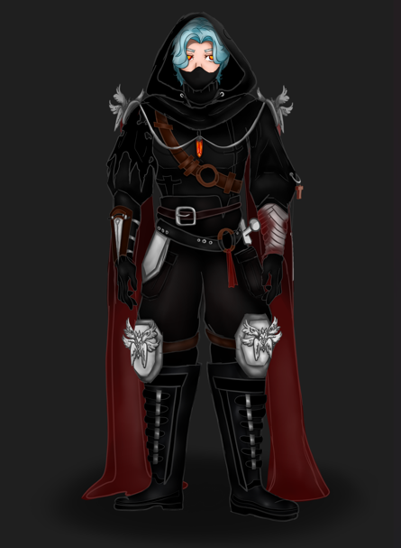
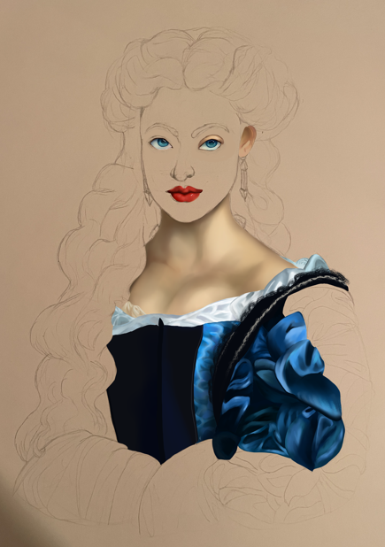
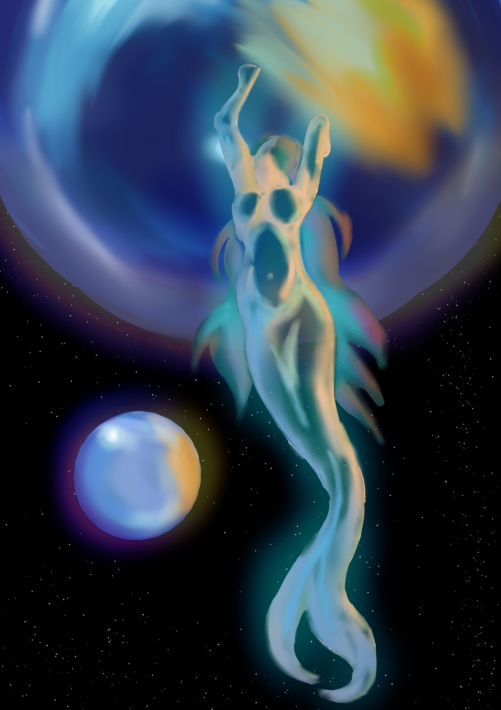
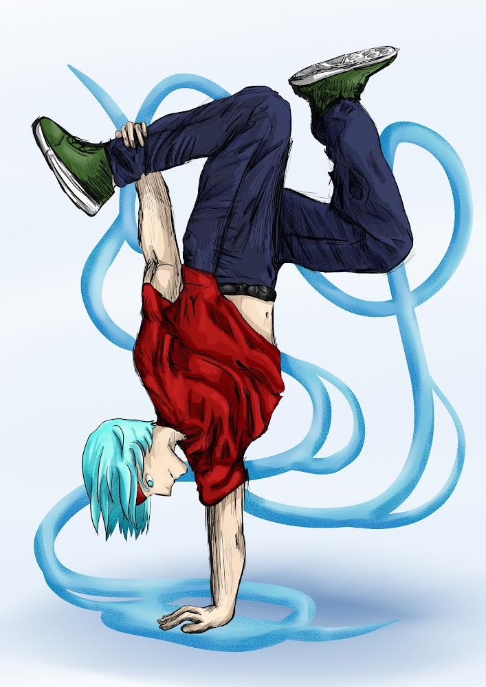
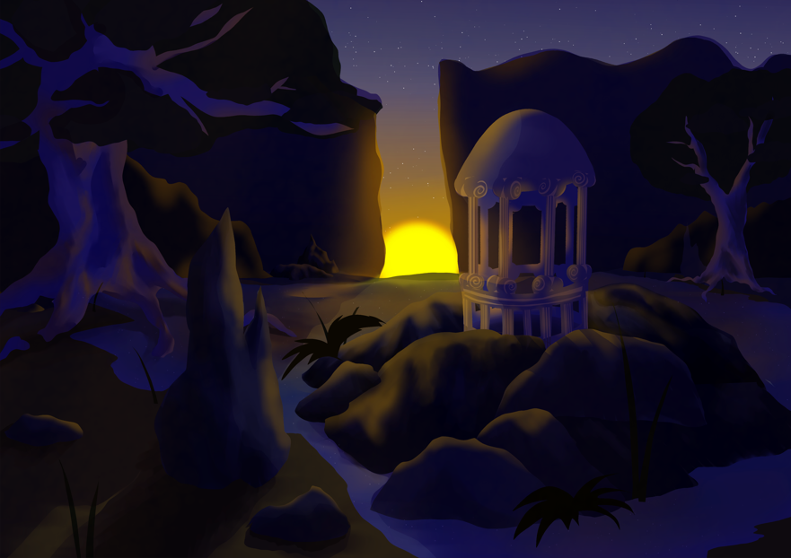

Portfolio
| Présentation | Dessins traditionnels | Dessins numériques | Programmes | Photos |
|---|
Cela fait quelques années que je dessine sur tablette graphique, sur l'application Krita. J'essaye de nouveaux styles et je développe mes techniques.




Ce dessin est celui qui m'a pris le plus de temps, je ne l'ai pas encore terminé mais je souhaite le finaliser au plus vite. Je pense qu'il est le dessin qui montre le plus mon évolution.


